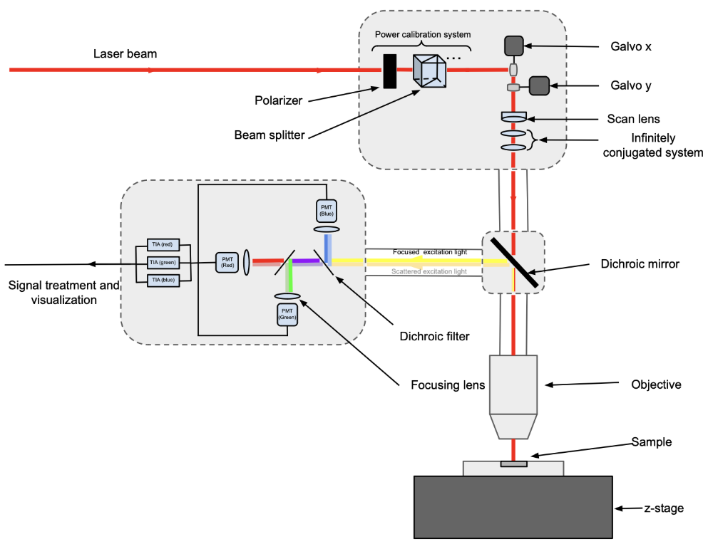
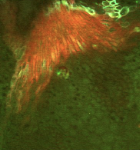

Hillman Lab
System restoration and MATLAB-based GUI denoising for point scanning.

During my first-year summer, I had the opportunity to work at Professor Hillman’s laboratory at the Zuckerman Institute. My primary objective was to repair the laboratory’s two-point confocal microscope.
This system had been assembled over a decade ago and was historically used by the lab for quick, preliminary sample investigations. However, at the time of my arrival, it had fallen completely out of use due to unidentified dysfunctional behavior.

02. End-to-End Diagnostics
Repairing the microscope required a massive reverse-engineering effort. I had to systematically inspect each and every single element of the system, testing physical components like the laser shutter alongside the core codebase that drove the imaging sequences.
Through this deep-dive troubleshooting process, I gained hands-on experience in complex optical alignments, data science, and the foundational principles of information theory required for modern imaging.
Optical Diagnostics Codebase Debugging
03. Signal Denoising & Results
Getting the hardware operational was only the first half of the project. To radically improve the final imaging outputs of the restored system, I developed a custom GUI-based denoising program utilizing MATLAB.
At the end of the summer, I compiled my findings regarding the hardware restoration and the software-based signal processing pipeline into a formal poster. I successfully presented these results at Columbia’s Summer@SEAS Research Symposium.
View High-Resolution Poster →MATLAB GUI Signal Processing